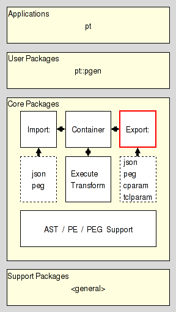

pt::peg::export - PEG Export
Are you lost ? Do you have trouble understanding this document ? In that case please read the overview provided by the Introduction to Parser Tools. This document is the entrypoint to the whole system the current package is a part of.
This package provides a manager for parsing expression grammars, with each instance handling a set of plugins for the export of them to other formats, i.e. their conversion to, for example nroff, HTML, etc.
It resides in the Export section of the Core Layer of Parser Tools, and is one of the three pillars the management of parsing expression grammars resides on.

The other two pillars are, as shown above
PEG Import, and
For information about the data structure which is the major input to the manager objects provided by this package see the section PEG serialization format.
The plugin system of this class is based on the package pluginmgr, and configured to look for plugins using
the environment variable GRAMMAR_PEG_EXPORT_PLUGINS,
the environment variable GRAMMAR_PEG_PLUGINS,
the environment variable GRAMMAR_PLUGINS,
the path "~/.grammar/peg/export/plugin"
the path "~/.grammar/peg/plugin"
the path "~/.grammar/plugin"
the path "~/.grammar/peg/export/plugins"
the path "~/.grammar/peg/plugins"
the path "~/.grammar/plugins"
the registry entry "HKEY_CURRENT_USER\SOFTWARE\GRAMMAR\PEG\EXPORT\PLUGINS"
the registry entry "HKEY_CURRENT_USER\SOFTWARE\GRAMMAR\PEG\PLUGINS"
the registry entry "HKEY_CURRENT_USER\SOFTWARE\GRAMMAR\PLUGINS"
The last three are used only when the package is run on a machine using the Windows(tm) operating system.
The whole system is delivered with three predefined export plugins, namely
See PEG Export Plugin. To CONTAINER format for details.
See PEG Export Plugin. To JSON format for details.
See PEG Export Plugin. To PEG format for details.
For readers wishing to write their own export plugin for some format, i.e. plugin writers, reading and understanding the Parser Tools Export API specification is an absolute necessity, as it documents the interaction between this package and its plugins in detail.
This command creates a new export manager object with an associated Tcl command whose name is objectName. This object command is explained in full detail in the sections Object command and Object methods. The object command will be created under the current namespace if the objectName is not fully qualified, and in the specified namespace otherwise.
All objects created by the ::pt::peg::export command have the following general form:
The method method and its arg'uments determine the exact behavior of the command. See section Object methods for the detailed specifications.
This method destroys the object it is invoked for.
This method takes the canonical serialization of a parsing expression grammar stored in serial and converts it to the specified format, using the export plugin for the format. This will fail with an error if no plugin could be found for the format. The string generated by the conversion process is returned as the result of this method.
If no format is specified the method defaults to text.
The specification of what a canonical serialization is can be found in the section PEG serialization format.
The plugin has to conform to the interface documented in the Parser Tools Export API specification.
This method is a convenient wrapper around the export serial method described by the previous item. It expects that object is an object command supporting a serialize method returning the canonical serialization of a parsing expression grammar. It invokes that method, feeds the result into export serial and returns the resulting string as its own result.
This method returns a list containing the names of all configuration options currently known to the object.
This method returns a dictionary containing the names and values of all configuration options currently known to the object.
This method sets the configuration option name to the specified value and returns the new value of the option.
If no value is specified it simply returns the current value, without changing it.
Note that these configuration options and their values are simply passed to a plugin when the actual export is performed. It is the plugin which checks the validity, not the manager.
This method unsets all configuration options matching the specified glob patterns. If no pattern is specified it will unset all currently defined configuration options.
Here we specify the format used by the Parser Tools to serialize Parsing Expression Grammars as immutable values for transport, comparison, etc.
We distinguish between regular and canonical serializations. While a PEG may have more than one regular serialization only exactly one of them will be canonical.
The serialization of any PEG is a nested Tcl dictionary.
This dictionary holds a single key, pt::grammar::peg, and its value. This value holds the contents of the grammar.
The contents of the grammar are a Tcl dictionary holding the set of nonterminal symbols and the starting expression. The relevant keys and their values are
The value is a Tcl dictionary whose keys are the names of the nonterminal symbols known to the grammar.
Each nonterminal symbol may occur only once.
The empty string is not a legal nonterminal symbol.
The value for each symbol is a Tcl dictionary itself. The relevant keys and their values in this dictionary are
The value is the serialization of the parsing expression describing the symbols sentennial structure, as specified in the section PE serialization format.
The value can be one of three values specifying how a parser should handle the semantic value produced by the symbol.
The semantic value of the nonterminal symbol is an abstract syntax tree consisting of a single node node for the nonterminal itself, which has the ASTs of the symbol's right hand side as its children.
The semantic value of the nonterminal symbol is an abstract syntax tree consisting of a single node node for the nonterminal, without any children. Any ASTs generated by the symbol's right hand side are discarded.
The nonterminal has no semantic value. Any ASTs generated by the symbol's right hand side are discarded (as well).
The value is the serialization of the start parsing expression of the grammar, as specified in the section PE serialization format.
The terminal symbols of the grammar are specified implicitly as the set of all terminal symbols used in the start expression and on the RHS of the grammar rules.
The canonical serialization of a grammar has the format as specified in the previous item, and then additionally satisfies the constraints below, which make it unique among all the possible serializations of this grammar.
The keys found in all the nested Tcl dictionaries are sorted in ascending dictionary order, as generated by Tcl's builtin command lsort -increasing -dict.
The string representation of the value is the canonical representation of a Tcl dictionary. I.e. it does not contain superfluous whitespace.
Assuming the following PEG for simple mathematical expressions
PEG calculator (Expression)
Digit <- '0'/'1'/'2'/'3'/'4'/'5'/'6'/'7'/'8'/'9' ;
Sign <- '-' / '+' ;
Number <- Sign? Digit+ ;
Expression <- Term (AddOp Term)* ;
MulOp <- '*' / '/' ;
Term <- Factor (MulOp Factor)* ;
AddOp <- '+'/'-' ;
Factor <- '(' Expression ')' / Number ;
END;
then its canonical serialization (except for whitespace) is
pt::grammar::peg {
rules {
AddOp {is {/ {t -} {t +}} mode value}
Digit {is {/ {t 0} {t 1} {t 2} {t 3} {t 4} {t 5} {t 6} {t 7} {t 8} {t 9}} mode value}
Expression {is {x {n Term} {* {x {n AddOp} {n Term}}}} mode value}
Factor {is {/ {x {t (} {n Expression} {t )}} {n Number}} mode value}
MulOp {is {/ {t *} {t /}} mode value}
Number {is {x {? {n Sign}} {+ {n Digit}}} mode value}
Sign {is {/ {t -} {t +}} mode value}
Term {is {x {n Factor} {* {x {n MulOp} {n Factor}}}} mode value}
}
start {n Expression}
}
Here we specify the format used by the Parser Tools to serialize Parsing Expressions as immutable values for transport, comparison, etc.
We distinguish between regular and canonical serializations. While a parsing expression may have more than one regular serialization only exactly one of them will be canonical.
The string epsilon is an atomic parsing expression. It matches the empty string.
The string dot is an atomic parsing expression. It matches any character.
The string alnum is an atomic parsing expression. It matches any Unicode alphabet or digit character. This is a custom extension of PEs based on Tcl's builtin command string is.
The string alpha is an atomic parsing expression. It matches any Unicode alphabet character. This is a custom extension of PEs based on Tcl's builtin command string is.
The string ascii is an atomic parsing expression. It matches any Unicode character below U0080. This is a custom extension of PEs based on Tcl's builtin command string is.
The string control is an atomic parsing expression. It matches any Unicode control character. This is a custom extension of PEs based on Tcl's builtin command string is.
The string digit is an atomic parsing expression. It matches any Unicode digit character. Note that this includes characters outside of the [0..9] range. This is a custom extension of PEs based on Tcl's builtin command string is.
The string graph is an atomic parsing expression. It matches any Unicode printing character, except for space. This is a custom extension of PEs based on Tcl's builtin command string is.
The string lower is an atomic parsing expression. It matches any Unicode lower-case alphabet character. This is a custom extension of PEs based on Tcl's builtin command string is.
The string print is an atomic parsing expression. It matches any Unicode printing character, including space. This is a custom extension of PEs based on Tcl's builtin command string is.
The string punct is an atomic parsing expression. It matches any Unicode punctuation character. This is a custom extension of PEs based on Tcl's builtin command string is.
The string space is an atomic parsing expression. It matches any Unicode space character. This is a custom extension of PEs based on Tcl's builtin command string is.
The string upper is an atomic parsing expression. It matches any Unicode upper-case alphabet character. This is a custom extension of PEs based on Tcl's builtin command string is.
The string wordchar is an atomic parsing expression. It matches any Unicode word character. This is any alphanumeric character (see alnum), and any connector punctuation characters (e.g. underscore). This is a custom extension of PEs based on Tcl's builtin command string is.
The string xdigit is an atomic parsing expression. It matches any hexadecimal digit character. This is a custom extension of PEs based on Tcl's builtin command string is.
The string ddigit is an atomic parsing expression. It matches any decimal digit character. This is a custom extension of PEs based on Tcl's builtin command regexp.
The expression [list t x] is an atomic parsing expression. It matches the terminal string x.
The expression [list n A] is an atomic parsing expression. It matches the nonterminal A.
For parsing expressions e1, e2, ... the result of [list / e1 e2 ... ] is a parsing expression as well. This is the ordered choice, aka prioritized choice.
For parsing expressions e1, e2, ... the result of [list x e1 e2 ... ] is a parsing expression as well. This is the sequence.
For a parsing expression e the result of [list * e] is a parsing expression as well. This is the kleene closure, describing zero or more repetitions.
For a parsing expression e the result of [list + e] is a parsing expression as well. This is the positive kleene closure, describing one or more repetitions.
For a parsing expression e the result of [list & e] is a parsing expression as well. This is the and lookahead predicate.
For a parsing expression e the result of [list ! e] is a parsing expression as well. This is the not lookahead predicate.
For a parsing expression e the result of [list ? e] is a parsing expression as well. This is the optional input.
The canonical serialization of a parsing expression has the format as specified in the previous item, and then additionally satisfies the constraints below, which make it unique among all the possible serializations of this parsing expression.
The string representation of the value is the canonical representation of a pure Tcl list. I.e. it does not contain superfluous whitespace.
Terminals are not encoded as ranges (where start and end of the range are identical).
Assuming the parsing expression shown on the right-hand side of the rule
Expression <- Term (AddOp Term)*
then its canonical serialization (except for whitespace) is
{x {n Term} {* {x {n AddOp} {n Term}}}}
This document, and the package it describes, will undoubtedly contain bugs and other problems. Please report such in the category pt of the Tcllib Trackers. Please also report any ideas for enhancements you may have for either package and/or documentation.
EBNF, LL(k), PEG, TDPL, context-free languages, expression, grammar, matching, parser, parsing expression, parsing expression grammar, push down automaton, recursive descent, state, top-down parsing languages, transducer
Parsing and Grammars
Copyright © 2009 Andreas Kupries <andreas_kupries@users.sourceforge.net>